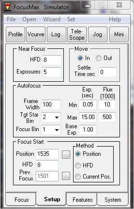
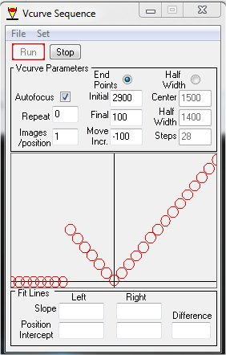
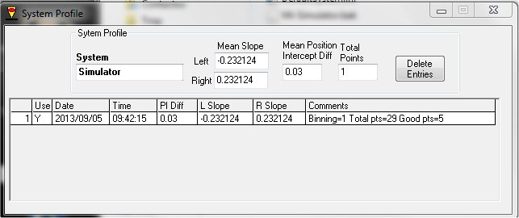
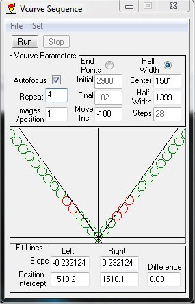
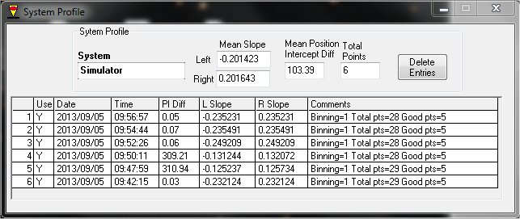
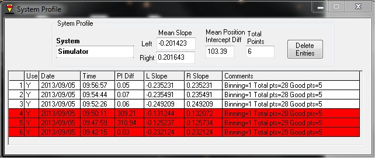
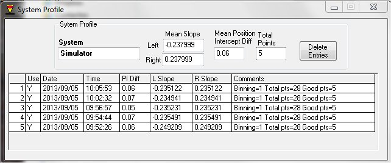

|
FocusMax - Curvas V |
||
|
|
||
FocusMax es una herramienta muy potente que permite obtener calidad de enfoque de manera automática, por lo que es una de los utensilios básicos en un observatorio controlado en remoto ... y en presencial, porque es muy cómo y rápido.
No es mi objetivo realizar un manual de FocusMax, describiendo cada una de las opciones que presenta. Hay muchos manuales disponibles en Internet. Pero si que he visto, y sufrido en mis propias carnes, que el método de obtención de las curvas V no es evidente, y que la herramienta Wizard que trae el propio FocusMax no es muy autoexplicativo. Es por ello que quiero aportar mi granito de arena con una pequeña guía del proceso que sigo para obtener las famosas curvas V.
En un proceso de enfoque, FocusMax se aleja del punto antrerios de enfoque lo suficiente como para sobrepasar el punto de HFD definido en Near Focus. En base a las curvas V hace una aproximación al punto HFD, realiza una serie de tomas (Exposures), calcula y decide cuál es el punto donde se encuentra el nuevo punto de enfoque.
Si el enfocador tiene mucho recorrido, esta operación no tiene mayor importancia, pero si el enfocador tiene poco recorrido y el grado de desenfoque que se obtiene en los extremos es poco, es muy importante reducir el HFD con el fin de limitar el mencionado desplazamiento. El valor óptimo lo obtendréis observando cómo de cerca de los extremos del recorrido se desplaza FocusMax cuando empieza un proceso de enfoque.
Es muy recomendable tener bien ajustados los parámetros de Near Focus, que se pueden ajustar en la ventana de SetUp.
Otro aspecto importante a tener en consideración, y que se ajusta en esta misma ventana, en la sección Move, es fijar en qué sentido se hace la aproximación hacia el punto de enfoque: de adentro a afuera o de afuera a adentro (In o Out). Lo normal es hacerlo hacia adentro, pues de esta manera la fuerza de la gravedad tirará hacia afuera y minimizaremos los posibles efectos de holguras.

Antes de comenzar con el proceso de cálculo de las curvas V, yo suelo enfocar el telescopio manualmente lo mejor que puedo. Luego pongo el motor del enfocador a mitad de recorrido, en vacío, sin actuar sobre el enfocador . Una vez hechas ambas operaciones engranamos el motor al enfocador. De esta manera tendremos el punto de enfoque a mitad de recorrido del motor, y de esta manera minimizaremos la posibilidad de salirnos del rango de pasos disponibles.
Hecho esto, vamos a calcular las curvas V, para lo que abriremos la ventana de Profile y en caso de existir datos de anteriores tomas, procederemos a eliminarlos seleccionándolos y usando la tecla Delete Entries.
Luego abriremos la ventana Vcurve, para hacer la primera aproximación. En este caso (la primera vez) usaremos la opción End Points. Suponiendo que enfocaremos hacia adentro, y que nuestros enfocador tiene 3000 pasos, fijaremos como Initial el 2900 y el Final 100, usando saltos (Move Incr.) de 100 en 100 (como es hacia dentro los saltos son negativos).
Aunque podríamos poner 3000 y 1, no conviene acercarse tanto a los límites.

Una vez ajustados los parámetros iniciales damos a Run y veremos cómo se va moviendo el enfocador y al mismo tiempo va apareciendo en la ventana Vcurve Sequence la famosa V.
Aunque a todos nos gustaría ver una V perfecta, la verdad es que el vértice suele ser redondeado.
Una vez terminado el proceso, veremos que aparece una entrada en la ventana Profile, y dado que tenemos marcada la opción Autofocus, FocusMax realizará un primer intento de enfoque automático con los valores calculados.

Hay usuarios que opinan que hace falta tener en el Profile no menos de 12 entradas de cálculos de curvas V. Mi experiencia me dice que con 5 es suficiente. Así que vamos a calcular unas cuentas curvas más.
A partir de haber realizado la primera aproximación siempre marcaremos para el resto de cálculos de curvas V la opción Half Width, cuyos valores ya los habrá dejado configurados el propio FocusMax en el autoenfoque realizado en el paso anterior. En el caso del ejemplo FocusMax ha dejado configurado el centro en el paso 1501, y recorrido desde 2900 (1501+1399) hasta 102 (1501-1399). En todo caso, podremos jugar con el ancho del recorrido si vemos que es demasiado amplio.
Opcionalmente podemos marcar la opción Autofocus, para que realice un autoenfoque cada vez que finalice una curva, aunque personalmente no suelo hacerlo.
Y marcaremos cuántas veces queremos que repita el proceso. Pondremos en Repeat un 4 si queremos que se haga una curva y cuatro veces más, es decir, cinco veces.
Una vez hechos los ajustes, daremos al botón Run ... y a esperar.

Según vaya avanzando el proceso irán apareciendo entradas en el Profile.

Es importante que todas las entradas en el Profile tengan un PI Diff similar.
Llegados a este punto, suelo eliminar la primera entrada (que era la primera aproximación) y aquellas que presentan un PI Diff muy discordante.

Si me quedan entradas suficientes doy por finalizado el proceso. Si no, realizo unos cuantos cálculos más hasta quedarme con 5 entradas buenas.

Y de esta manera habremos calculados las curvas V para nuestra óptica tal y como se encuentra en este momento.
Recordad que si hacéis algún cambio que pueda modificar el tren óptico es necesario volver a obtener las curvas V.
Espero que os sea de utilidad.